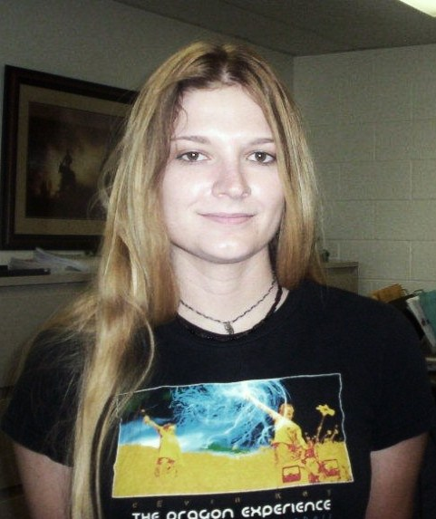

Welcome.
You have reached the homepage of Ashley Teufel. I am a computational evolutionary biologist and a
postdoctoral fellow in Claus Wilke's group at The University of Texas at Austin.
About Me

In pursuit of answers to these questions, my Ph.D work was centered on developing models to examine a major source of functional genomic change: duplicated genes. My dissertation introduces models based on the age distributions of duplicated genes to allow for mechanistic interpretations of duplicate gene retention from genomic data. This work further demonstrates that accounting for population level effects and selective pressure to maintain dosage balance can improve phylogenetic analyses of duplicated genes. Over the course of my graduate studies, I also collaborated with ecologists to study evolution in clinal populations, and worked with statisticians developing genetic algorithms to predict RNA structures.
Currently, as a post-doctoral researcher I am studying how proteins diverge in function after duplication. I have made the unexpected observation that important functional changes frequently happen in non-duplicated proteins interacting with one or more of the duplicated proteins, rather than in the duplicated proteins themselves. This finding highlights that concepts such as neofunctionalization, subfunctionalization, or functional loss after duplication need to be studied in the context of the entire system containing a duplicated gene, not just the duplicated gene by itself. I also work closely with experimentalists to study evolution both in a project to humanize yeast and in a single-cell virology project.
You can check out a currentish copy of my CV here.
In my spare time I play an absurd amount of Xbox, repair antique gaming consoles, make my own hot sauce, and watch a lot of cheesy old monster movies.
Publications
Protein Evolution
Teufel, A.I., Grahnen, J.A., and Liberles, D.A. 2011 “Modeling proteins at the interface of structure, evolution, and population genetics” in Computational Modeling of Biological Systems: From Molecules to Pathways (Ed: Dokholyan). New York: Springer-Verlag, 2012
Gene Duplication
Mechanistic Models
Other
Education
11/2015-present
Postdoctoral Fellow, University of Texas at Austin (Austin, TX)
Advisor: Prof. Claus Wilke
10/2015
Ph.D., Molecular Biology, University of Wyoming (Laramie, WY)
Advisor: Prof. David Liberles
Dissertation Title: “Mechanistic Models for Gene Duplication”
12/2007
B.S., Mathematics, Minor Bioinformatics, New Mexico State University (Las Cruces, NM)
5/2006
B.S., Computer Science, Minor Mathematics, New Mexico State University (Las Cruces, NM)
Experience
2/2015-9/2015
Visiting Research Fellow, Department of Biology, Temple University (Philadelphia, PA)
Advisor: Prof. David Liberles (relocated from U. Wyoming)
6/2012-8/2012
Visiting summer student of computational biology, University of Oxford (Oxford, UK)
Advisor: Prof. Jotun Hein
5/2008-5/2010
M.S. student, Biology, Minor Mathematics, New Mexico State University (Las Cruces, NM) (Resigned position to begin Ph.D. studies at U. Wyoming)
Advisor: Prof. Brook Milligan
Teaching
1/2013-5/2014
Teaching Assistant, Bioinformatics, University of Wyoming
8/2013-12/2013
Teaching Assistant, Computers in Biology, University of Wyoming
1/2012-5/2012
Teaching Assistant, Bioinformatics, University of Wyoming
8/2011-12/2011
Teaching Assistant, Computers in Biology, University of Wyoming
1/2005-5/2010
Laboratory Proctor, Computer Science, New Mexico State University
5/2009-7/2009
Teaching Assistant, Mathematics in Biology (summer program for high school students), New Mexico State University
Contact
2500 Speedway, A4800, Room: MBB 3.232
Austin, TX 78712